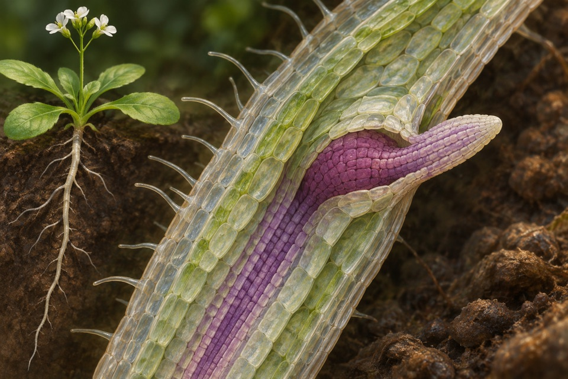

Module 01
Postmitotic elongation of root hairs
Measure individual root hair elongation and growth duration independently of root depth or root hair density.
Evidence recordOpen any of the ten modules to see the reported observation, its sources, and the research questions still open.
Measure individual root hair elongation and growth duration independently of root depth or root hair density.
Evidence record
Maintain ATP supply to an ATP-consuming reaction using inorganic polyphosphate as the phosphoryl donor.
Evidence record
Track relative free cytosolic glucose during changes in external supply.
Evidence recordMeasure discrimination of circular polarization handedness under matched illumination.
Evidence record
Count emerged lateral roots at comparable ages and distinguish delayed emergence from reduced initiation.
Evidence record
Recover xylitol as the principal measured product of xylose conversion.
Evidence record
Measure a calibrated zinc-linked fluorescence ratio in a defined cell compartment.
Evidence record
Measure directional headings when sunlight and polarization cues differ.
Evidence record
Track founder-cell and primordium identities separately from mature root emergence.
Evidence record
Quantify 2-oxoglutarate as the desired secreted acid and identify the carbon going into other organic acids.
Evidence record